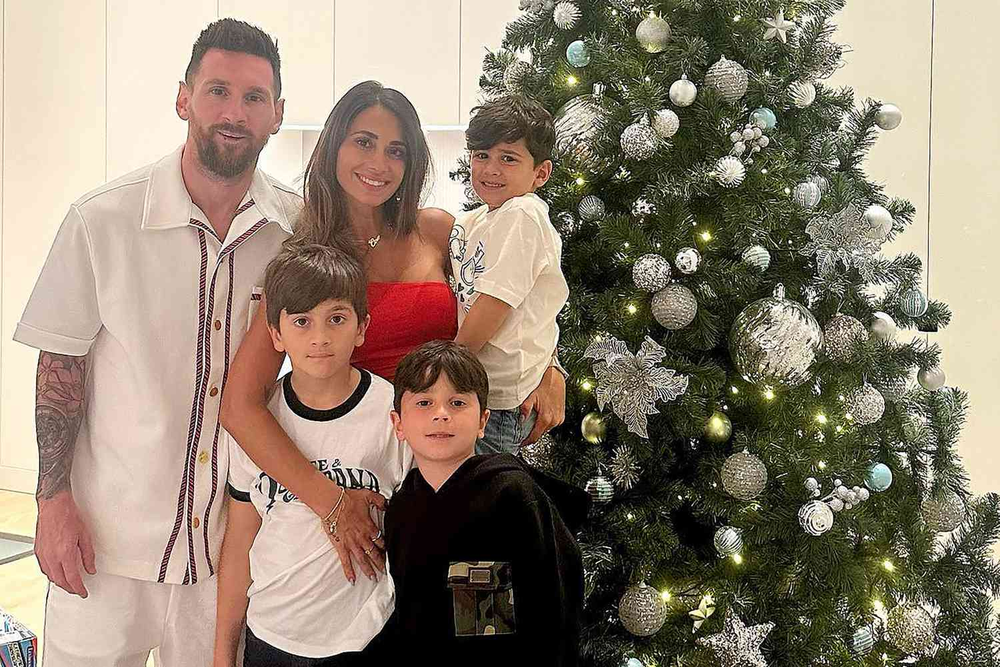

The Messi family recently took a relaxing vacation together. They enjoyed the beach and spent
quality time away from football.
Messi often shares these moments online, showing his love for family life. These trips help them
stay close and happy.
Family celebration
The Messi family loves celebrating birthdays and special events. These gatherings are full of
smiles and fun activities.
His children are always excited during these events. It shows how strong their family bond is.

Simple family life
Even with worldwide fame, Messi enjoys a simple home life with his family. He spends time
playing with his kids and relaxing.
His wife supports him fully in both career and life. Together they live a balanced and happy
lifestyle.